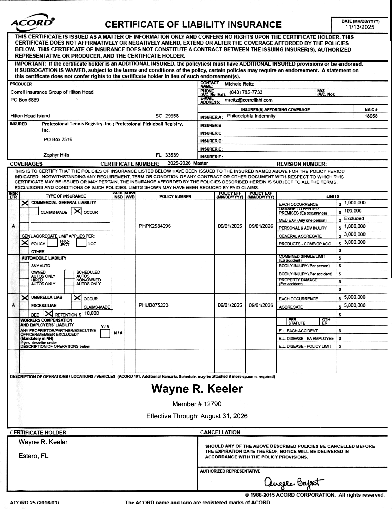

July 6th, 2025
Re: Employment reference for Wayne Keeler
I have known Wayne for the past 15 years as a friend, colleague and also an employee.
Wayne is one of the most dedicated and enthusiastic tennis professionals I have come across. He was loved and respected by all his students when he was at our club.
Wayne has the ability to work with players of any age and levels and he is also capable of organizing and teaching large groups.
I will strongly recommend Wayne to the position of tennis director or head professional.
Sincerely,
Dinesh Rajagopalan
Owner, New Milford Tennis and Swim Club
New Milford, CT 06776
April 26th, 2025
Hi Mark,
I am writing to you about Wayne Keeler. I understand that Sterling Oaks is looking for a pro to teach lessons and clinics for the summer months.
I have been with Wayne for at least 8 years. I was a 4.5 rated tennis player and am now a 67 year old 4.0 rated tennis player. I have and will continue to follow Wayne wherever he wants to teach!
I also am very familiar with good and mediocre tennis pros as I managed a tennis facility in St. Louis for 15 years. I know how hard it is to find a good pro! Wayne is a very good pro. He is passionate about teaching the game of tennis to all ages and all levels. He is a master at making the game fun while improving everyone's tennis. He loves bringing people together while playing the game.
The Villages at Country Creek is a supreme example of Wayne working his magic on the courts. Prior to this year, Country Creek had been tennis courts where people occasionally played tennis; now they have a tennis community with better tennis and much laughter and fun.
Please consider Wayne for your next pro at Sterling Oaks — you won't be sorry; nor will your tennis players!
Feel free to contact me if you'd like.
Thank you,
Lisa Lamb
40+ & 55+ USTA League Coordinator
To whom it may concern,
I wanted to write a note to the hiring manager in behalf of Wayne Keeler.
I have known Wayne for about 20 years and my company hired him back a few years ago. I was the COO of TCA (Tennis Corporation of America). I have since retired but still get involved with hiring tennis professionals for many clubs around the country.
Wayne is the best DPP in the country. A DPP is a "Dazzling Pro Personality." I speak often at industry events and use Wayne as a example of a professional that can build a "book" better than anyone I know. He teaches upwards to 55 hours a week and gets there faster than anyone I have ever seen. I would hire him in a heartbeat if I still was in the business.
I can't assess his managerial skills because he was not in that position with my company. However if enthusiasm is contagious then his pros will all be excited to teach this great game.
Please don't hesitate to get in touch with me if you need additional information.
Here's to Growing the Game of Tennis,
Sincerely,
Doug Cash
Former COO, Tennis Corporation of America
CashFlowTennis.com
June 11, 2025
Re: Mr. Wayne Keeler
To Whom It May Concern,
I am writing this letter of reference for Mr. Wayne Keeler; I have known Wayne for the last six years in his role as a local tennis and pickleball professionals teaching pro. I have found Wayne to be very personable, hard working and very knowledgeable in racket sports. Wayne is well liked by his students, and I personally have benefited from Wayne's teaching.
Wayne has a strong background in competitive sports, club operations and guest relations.
Sincerely,
Paul Hiltz
President & CEO
Verified Active Status
Insured Name: Wayne R. Keeler
Member ID: #12790
Organization: Professional Tennis Registry (PTR) & PPR
Coverage: $1M Occurrence / $3M Aggregate / $5M Umbrella
Effective Through: August 31, 2026
Digital Scan of Official Certificate:
